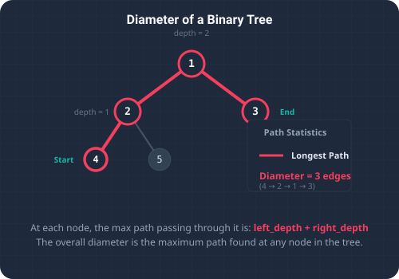

A core aspect of tree-based algorithms is understanding traversal patterns and path calculations. A classic challenge in this domain is finding the Diameter of a Binary Tree. The diameter is defined as the length of the longest path between any two nodes in the tree. This path does not necessarily have to pass through the root node. The length of the path is measured by the number of edges (connections) between the two nodes.
This problem is particularly interesting because the optimal path can reside entirely within the left subtree, entirely within the right subtree, or span across the root node itself. To calculate this correctly, we must inspect the path potential at every individual node in the tree.

To visualize the diameter, imagine a highway network laid out in a branching, tree-like structure. The towns are nodes, and the roads between them are edges. You want to find the longest driving route between any two dead-end towns (leaves) without backtracking or driving on the same road twice.
For any specific town acting as an intersection, the longest route that passes through it is the sum of the longest one-way road going down its left branch (left depth) and the longest one-way road going down its right branch (right depth). By calculating this sum at every single town intersection across the entire network, we can determine the absolute longest route.
Algorithmic Approaches
1. The Naive Method (O(N²) Time)
We can solve this by calculating the height of the left and right subtrees for every node in the tree, summing them, and keeping track of the maximum. Since calculating the height of a subtree takes O(N) time, repeating this for all N nodes leads to an inefficient quadratic time complexity of O(N²).
2. The Optimized DFS Method (O(N) Time)
Instead of calculating heights redundantly, we can compute the node heights and update the global diameter in a single post-order Depth-First Search (DFS) traversal. As the recursion bubbles up from the leaves to the root:
- We calculate the left subtree depth (
left) and right subtree depth (right). - The local diameter is
left + right. We compare this with our running global maximum and update it if it's larger. - We return the height of the current node to its parent:
1 + Math.max(left, right).
O(N).
Step-by-Step Scenario Walkthrough
Let's trace this single-pass DFS on a simple binary tree where root 1 has left child 2 (with children 4 and 5) and right child 3:
- DFS to Leaves: We traverse down to leaf node
4. Being a leaf, its left and right subtrees are null (heights0). The local diameter is0 + 0 = 0. Node4returns its height1to its parent (node2). Similarly, leaf node5returns height1to node2. - Process Node 2: Node
2receives left height1and right height1. Its local diameter is1 + 1 = 2(the path4 → 2 → 5). We update the global maximum diameter to2. Node2returns its height2(1 + max(1,1)) to root1. - Process Node 3: Leaf node
3returns height1to root1. - Process Root 1: Root
1receives left height2and right height1. Its local diameter is2 + 1 = 3(the path4 → 2 → 1 → 3). We update our global maximum diameter to3.
3.
Key Code Explanations
Here is why the main logic in the solution is important:
if (node == null) return 0;: The base case for the recursive traversal. An empty subtree has a height of 0.max = Math.max(max, left + right);: Updates our global variablemaxwith the longest path found passing through the current node as the peak connector.return 1 + Math.max(left, right);: Computes the height of the current node by taking the maximum path from either left or right child and adding 1 (representing the edge connecting the current node to its parent).
Java Implementation Code
Below is the complete, self-contained Java source code that solves this problem. It also includes a main method that traces the execution with console outputs.
package io.practise.dsa;
public class DiameterBinaryTree {
public static class TreeNode {
public int val;
public TreeNode left, right;
public TreeNode(int val) { this.val = val; }
}
int max = 0;
// DFS + Height Tracking - O(n)
public int diameterOfBinaryTree(TreeNode root) {
maxDepth(root);
return max;
}
private int maxDepth(TreeNode node) {
if (node == null) return 0;
int left = maxDepth(node.left);
int right = maxDepth(node.right);
max = Math.max(max, left + right);
return 1 + Math.max(left, right);
}
public static void main(String[] args) {
DiameterBinaryTree solver = new DiameterBinaryTree();
TreeNode root = new TreeNode(1);
root.left = new TreeNode(2);
root.right = new TreeNode(3);
root.left.left = new TreeNode(4);
root.left.right = new TreeNode(5);
System.out.println("--- Diameter of Binary Tree Demonstration ---");
System.out.println("Diameter: " + solver.diameterOfBinaryTree(root));
}
}Conclusion & Complexity Analysis
By embedding the diameter checks within our height calculation, we avoid redundant traversals. This DFS algorithm runs in O(N) linear time and uses O(H) auxiliary space for the recursion stack (where H is the height of the tree). This is an elegant demonstration of how post-order traversal can solve multiple tree properties simultaneously.